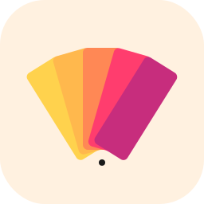

Circle a button. Point at a heading. Type "make this tonal". Pinta hands the annotation to your coding agent — Claude Code, Cursor, Aider, or any MCP-compatible tool — which edits the matching source files for you.
Three components, one loop. The extension talks only to the companion. The companion talks to any agent. Nothing is hard-wired to a vendor.
Open the side panel. Press S to pick an element, or D to draw — arrow, rect, circle, freehand, pin. Type a comment per annotation.
Hit Submit. The extension takes a full-page screenshot, bakes the annotations onto it, and posts the session to the companion at localhost:7878.
Your agent picks up the session, presents an edit plan grouped by file, and applies the changes once you confirm. HMR shows the result.
Phases 0–5 of the spec are shipped. Source mapping (Phase 6) and polish (Phase 7) are next.
Svelte 5 + CRXJS. Side panel, popup, content-script overlay. Drawing canvas isolated in a Shadow DOM root so host CSS can't leak in.
Hover-highlight, click-to-lock, computed selector, captured outerHTML, computed styles, and nearby text for grep fallback.
Arrow, rectangle, circle, freehand, pin. Page-relative coords; drawings translate with scroll. Edge-aware comment popup positioning.
Scroll-and-stitch capture from the service worker. Annotations composited onto the PNG before handoff so the agent sees what you see.
Node 20+. Native HTTP, WebSocket via ws, MCP via the official SDK. Sessions persisted as JSON in .pinta/sessions/.
Reference Claude Code skill ships with the repo. MCP server works with Cursor, Cline, Continue, Zed, Windsurf. HTTP API is the floor.
Three boundaries that matter — extension knows nothing about agents, companion knows nothing about specific agents, agents know nothing about the extension. That separation is the entire point.
Annotate Capture Edit
──────── ─────── ────
┌──────────┐ WebSocket ┌───────────┐ HTTP / MCP ┌──────────┐
│ Chrome │ ◄──────────► │ Pinta │ ◄──────────► │ Claude │
│ extension│ │ companion │ │ Code │
│ │ │ │ │ Cursor │
│ overlay │ │ :7878 │ │ Zed │
│ + panel │ │ │ │ Aider │
└──────────┘ └───────────┘ └──────────┘
│
▼
.pinta/sessions/{id}.json
.pinta/sessions/{id}.png
Every agent listed below works against the same companion — no extension changes, no rebuild.
| Agent | Integration | Status |
|---|---|---|
| Claude Code | Skill (~/.claude/skills/pinta/) — long-polls the HTTP API |
Reference — shipped V1 |
| Cursor / Cline / Continue / Zed / Windsurf | MCP stdio server (pinta-mcp) proxies the companion |
Shipped V1 |
| Aider | Poll script under adapters/aider/ |
Shipped V1 |
| Anything else | HTTP API (/v1/sessions/poll, /v1/sessions/:id/status) |
Universal floor |
Node 20+ and Chrome (or any Chromium-based browser). Three commands gets you to a loadable extension and a runnable companion.
# 1. Clone + install
git clone https://github.com/kevzlou7979/pinta.git
cd pinta
npm install
# 2. Build the extension and the companion
npm run build --workspace @pinta/extension
npm run build --workspace @pinta/companion
# 3. Install the Claude Code skill (optional)
bash scripts/install-skill.sh
# 4. Load the extension in Chrome
# chrome://extensions → Developer Mode → Load unpacked → ./extension/dist
# 5. Start the companion in the project you want to edit
node ~/.claude/skills/pinta/start-companion.js .
# or: npm run dev:companion -- --project /path/to/your/app
Then, in Claude Code, type /pinta. Or in Cursor: "Pick up the pending Pinta session and apply the changes — show me the plan first."
V1 covers the core loop end-to-end. Next milestones, in priority order.
Inject data-source-file and data-source-line in dev. Eliminates the grep guess; targets >95% mapping accuracy.
Drag-to-reorder annotations, group by file in the side panel, undo via git, per-project .pinta.json, plan-then-execute toggle.